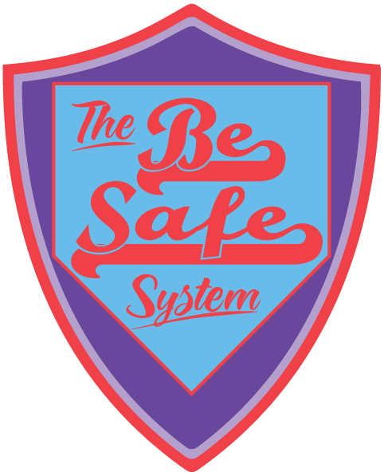

{% extends 'base.html' %}
{% block title %}Check In With Me{% endblock %}
{% block head %}
{% endblock %}
{% block content %}

Are you going on a first date, to a party, or just traveling on your own and want to make sure that you'll be safe and get backup if anything goes down, but don't want to bother your friends and family every time you go out? Check In With Me is for you!
Check In With Me Features:

The Be Safe System here at CheckInWithMe.org is an online application made to help ensure your safety when you are out in the world, without involving 911 or law enforcement. Originally designed for sex workers, the Be Safe System allows you to create pre-scheduled check ins with the app. Once activated, you must check in with the app using a browser, SMS, or e-mail. If you check-in before the scheduled check-in, nothing will happen, but if you miss the check in, a message will automatically be sent to your friends or family alerting them to the situation and encouraging them to check in with you or to search for you at your most recent location.
{% endblock %}